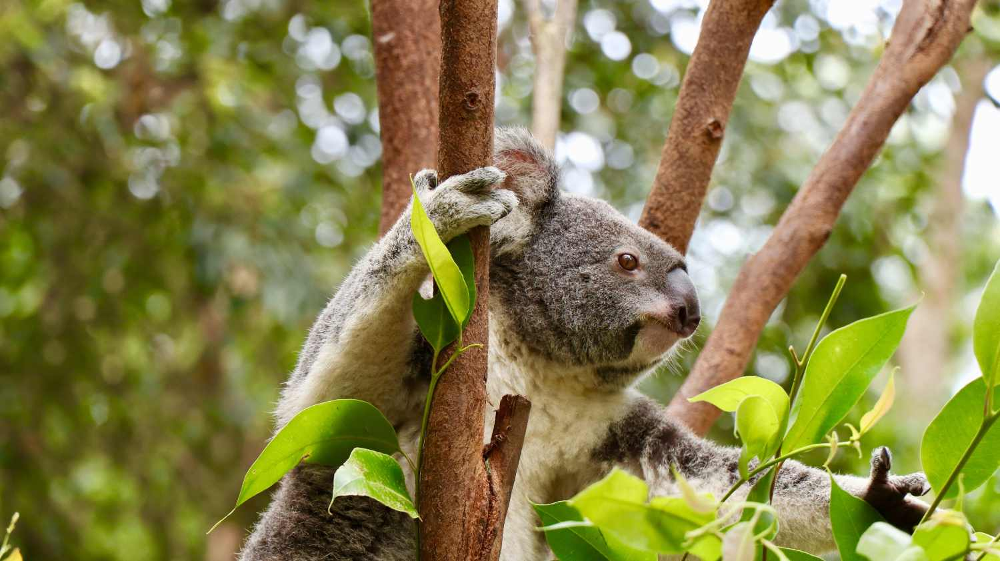

hábitos reproductivos
Los koalas alcanzan su madurez sexual a partir de los 3 o 4 años de edad. Estos animales cuentan con un sistema reproductivo muy llamativo, ya que el macho presenta un pene bifurcado, con dos extremos, y la hembra dos ovarios, dos vaginas y dos úteros diferenciados. ¡Es un rasgo típico de los marsupiales!
Con un clima apropiado, la temporada de apareamiento suele durar desde la primavera hasta principios de otoño. En estos meses, el macho emite un sonido para atraer y seducir a la hembra, que identifica el sonido y se decanta por un ejemplar u otro según la intensidad del sonido.
Estado de conservación

El pasado 11 de febrero de 2022 Australia declaró a los koalas en peligro de extinción. De hecho, si la especie sigue en esta tendencia, se estima que para el año 2050 se encuentre completamente extinta. Esta declaración no es más que una medida del gobierno australiano para proteger a la especie ante la destrucción y pérdida de su hábitat.
| NOMBRE COMÚN: |
Koala |
| CLASE: |
Mamífero |
| ALIMENTACIÓN: |
Herbívoro |
| TAMAÑO: |
60 a 85 cm |
| PESO: |
9 kg |